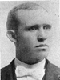
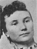

Home
Histories
Charts
Photos
Maps
Restricted
News
Info
Contact
|
(In these pages, the book symbol is a link to a history, and the chart symbol is a link to a family group chart.)
|
| William Walton Burton
and Ellen Fielding |
----> |

| John Fielding Burton
26 June 1872 - 21 Oct. 1959
and Muzetta Porter
26 Apr. 1874 - 3 June 1950
Married 8 Apr. 1897 Salt Lake City, UT
and Florence Porter
31 Oct. 1876 - 5 Nov. 1947
Married 15 Nov. 1901 |
 | Chauncy Union Porter
and Favoretta Rich |
|
| * |
Musetta (Gretta) Burton
22 Aug. 1902 - 10 Dec. 1907
The 1st child of John Fielding Burton and Florence Porter
|
|
William John Burton
27 Dec. 1903 - 8 Sep. 1968
Married Lueinna Evelyn Arbon 17 Feb. 1928
The 2nd child of John Fielding Burton and Florence Porter |
|
Belle Burton
24 Jan 1908 - 10 May 1977
Married Charles "J" Wood 11 June 1930
The 3rd child of John Fielding Burton and Florence Porter |
|
Lowell Porter Burton
16 Oct. 1910 - 28 Jan. 1993
Married Berite Carter 23 Feb. 1944
The 4th child of John Fielding Burton and Florence Porter
|
|
James Legrand Burton
25 Feb. 1916 - 2 Nov. 2003
Married Maurine Marble 18 Apr. 1940
The 5th child of John Fielding Burton and Florence Porter |
Back to Burton Family History web pages.
|